ImageMagick Examples --
 Color Basics and Channels
Color Basics and Channels
- Index
 ImageMagick Examples Preface and Index
ImageMagick Examples Preface and Index
 What is to Color
Gamma Correction and sRGB Colorspace
What is to Color
Gamma Correction and sRGB Colorspace
- Human Color Perception
- Gamma Correction
- Gamma of your Monitor
- sRGB Colorspace Correction
- Processing Real Images
Color Specification
Color Channels
- ColorSpace - How Color is Stored
- Separating Channel Images
- Grayscale Channels from Colorspaces
- Other Channel Separation Methods
- Combining RGB Channel Images
- Combining non-RGB Channel Images
- Zeroing Color Channels
Colorspaces
- Hue based Colorspaces (HSL, HSB)
- Generating a HSL ColorWheel
- Perceptual Colorspaces (Lab, Luv)
- The LCH ColorWheel
Replacing Colors in an Image
(replacing specific colors)
What is Color?
To really understand color, you need to know exactly what color is. In the physical world color is actually an illusion. We see color because our eyes sense the physical world in very special limited way. Basically in our eyes we have special sensors for Red, Green, Blue, and a minor lesser sensor for peripheral and low light conditions. The later is why we see only grey colors at night. For more info see Wikipedia,
Cone Cells, the graph right which is the response of a typical human eye
to different wavelengths of light.
Because of this we only sense the world in terms of Red, Green and Blue
electromagnetic wave lengths, and this is why images and image processing
is generally all about Red, Green, and Blue, or RGB.
However it isn't quite as simple as that either. Each of our color sensors
actually respond to a range of wavelengths. For example when we see a yellow
light, we actually sense the light using both red and green sensors. If our
color sensors were strictly pure red and green detectors, we would not see any
yellow colors at all. Rainbows would in fact show 'gaps' in it.
That means a TV or computer display is actually fooling us into seeing yellow
by the monitor emitting just the right mix of red and green light, rather than
actual yellow light. Our color sensors see the same intensity as it would for
a pure yellow light, and as a result we see yellow, even though in reality we
are really seeing two different color frequencies. We just can not tell the
difference between a pure yellow, and a mix of red and green light.
In a similar way blue-red (purple) colors do not actually exist as a single
specific wavelength, but only as a mix of at least two color frequencies,
though strictly speaking violet is a specific frequency we do react to, mostly
by blue, and very slightly by the other two sensors.
Note we actually have a forth vision sensor, but it is not color, but a low
light detector, which is used for night vision, when cone sensors no longer
work very well. This is why night time looks monochromatic, and moon light is
all grays. This sensor is also probably the reason why sRGB colorspace (see
below) has an odd linear component for very dark colors in it.
ASIDE: Other animals have different sensors to us. Bees and most other insects
have sensors for ultra violet, as such to them our printed images, TVs, and
billboards would probably make very little sense. More than likely these
artificial images would probably look more like a rather horrible false color
image, than the near perfect color we humans are fooled into seeing. Some
animals have 4 color sensors, while others only have one (black and white) or
two. Also some animals see movement far better than any specific color. A bull
for example, can not see red, but blue-violet and green wavelengths, but
a flapping cap would show as a blaze of a 'movement' color. To a bull,
a monitor's 50/60Hz update cycle, would probably look like a blaze of
'movement' rather than any sort of sensible image!
For more information see Wikipedia, Color Vision and Wikipedia, Color.
For more info see Wikipedia,
Cone Cells, the graph right which is the response of a typical human eye
to different wavelengths of light.
Because of this we only sense the world in terms of Red, Green and Blue
electromagnetic wave lengths, and this is why images and image processing
is generally all about Red, Green, and Blue, or RGB.
However it isn't quite as simple as that either. Each of our color sensors
actually respond to a range of wavelengths. For example when we see a yellow
light, we actually sense the light using both red and green sensors. If our
color sensors were strictly pure red and green detectors, we would not see any
yellow colors at all. Rainbows would in fact show 'gaps' in it.
That means a TV or computer display is actually fooling us into seeing yellow
by the monitor emitting just the right mix of red and green light, rather than
actual yellow light. Our color sensors see the same intensity as it would for
a pure yellow light, and as a result we see yellow, even though in reality we
are really seeing two different color frequencies. We just can not tell the
difference between a pure yellow, and a mix of red and green light.
In a similar way blue-red (purple) colors do not actually exist as a single
specific wavelength, but only as a mix of at least two color frequencies,
though strictly speaking violet is a specific frequency we do react to, mostly
by blue, and very slightly by the other two sensors.
Note we actually have a forth vision sensor, but it is not color, but a low
light detector, which is used for night vision, when cone sensors no longer
work very well. This is why night time looks monochromatic, and moon light is
all grays. This sensor is also probably the reason why sRGB colorspace (see
below) has an odd linear component for very dark colors in it.
ASIDE: Other animals have different sensors to us. Bees and most other insects
have sensors for ultra violet, as such to them our printed images, TVs, and
billboards would probably make very little sense. More than likely these
artificial images would probably look more like a rather horrible false color
image, than the near perfect color we humans are fooled into seeing. Some
animals have 4 color sensors, while others only have one (black and white) or
two. Also some animals see movement far better than any specific color. A bull
for example, can not see red, but blue-violet and green wavelengths, but
a flapping cap would show as a blaze of a 'movement' color. To a bull,
a monitor's 50/60Hz update cycle, would probably look like a blaze of
'movement' rather than any sort of sensible image!
For more information see Wikipedia, Color Vision and Wikipedia, Color.
RGB Color Space, and Channels
So RGB color space is really a way of representing images using three values Red, Green, and Blue, that will fool us into thinking we are seeing something in the real world. Images can thus be stored as an 3 arrays values, with each of the three values forming a single pixel, or point of color, to be displayed. Each of the three arrays of values are known as a channel, which is simply a gray-scale image representing the amount of light to create for just one of our color sensors. For example, here are the red, green, and blue components of a rose image.|
Rose |
|
Red |
Green |
Blue |
CMY color space
When you are printing you have a different problem. A piece of paper can not generate light, only reflect it. As such you need to start with a surface that reflects all the light that hits it, in all directions. That is, what a white surface is. Hopefully the light it is reflecting is itself a pure white light either from the sun shining in the window, or being generated by the lights in our artificially lit rooms. Now to create an image on that paper you need to apply ink to that surface, which actually removes particular wavelengths of light. As we 'sense' red, green, and blue colors, those are the colors we want to selectively remove from the light reflecting from that white piece of paper. Consequently we use a cyan ink to remove red light, magenta to remove green light, and yellow to remove blue light. The amount of Cyan, Magenta, and Yellow ink needed to generate a specific color produces what is termed CMY colorspace. Here I generate an ink masks is needed to generate a rose image using just cyan, magenta and yellow inks (assuming the inks are 'linear')|
Rose |
|
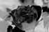
Cyan |
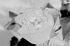
Magenta |
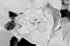
Yellow |
CMYK color space
The major problem with selectively removing wavelengths, is that just removing all red, green, and blue light, by applying all three cyan, magenta, and yellow inks, does not actually remove all the light that is being reflected. As a result you will be left not with a black color, but a horrible looking muddy brown color. The inks (or light filters) are not perfect, just as our own eyes are not perfect. As I mentioned before, each of our color sensors does not see just one wavelength of light, but a range of wavelengths that we interpret as being 'red' 'green' or 'blue' (or a mix of those colors). So much so that our 'blue' light sensor can actually see (though not very well) a little ultra violet. ASIDE: the filter of a 'black light' is purposefully imperfect, so that we can 'just see' the light from such a lamp, so we can know if it is on or not. It is because of this 'leakage' of color from the CMY inks, and our own imperfect eyes, that we also add a pure black ink to the mix, allowing it to be used to wipe out ALL light that could be reflected from paper. To prevent it being confused with blue the black ink or channel is assigned the letter K. As such for printing we use four colored inks: Cyan, Magenta, Yellow, and blacK; and define images using these inks, to form a CMYK color space. For example, here are the appropriate CMYK components separated out from this image.|
Rose |
|
Cyan |
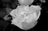
Magenta |
Yellow |
blacK |
Other Color Spaces
Other colorspaces are just other ways of representing those same colors, or some of the others beyond strict RGB that our imperfect eyes can also make out. However such color spaces have little bearing on either displaying those colors using a monitor, or in printing. They basically represent other ways of handling and/or processing the colors of an image, so as to enhance or highlight specific things such as...- Better non-linear handling of Dark Colors (sRGB)
- Color rainbows and hues (HSB,HSL,HSI,OTHA color spaces - intensity not preserved)
- Standardized definition colors (XYZ)
- Precise or Perceptual Color Differences (LAB and LUV colorspace, and their LCHab and LCHuv cyclic hue equiv)
- Expanded High-Dynamic Ranges (for use with HDRI images) (scRGB)
- Better compression of color values (such as in YIQ and YUV)
- Transmission for TVs (YCbCr, YPbPr, where Y = BW signal)
| The above changes to the 'colorspace' of an image is only a gross arrangement of the colors of an image within memory. It also provides very basic (simplistic) color conversions between different colorspaces. For exact color specifications and color conversions Color Profiles should be used instead, but only works when using image file formats that can handle color profiles. |
Gamma Correction and sRGB Colorspace
Human Color Perception
In the above we saw that you can represent images in many different ways. All the color-spaces we looked at above are known as 'linear' colorspaces, which means that the actual value used represents the actual 'intensity' values of the color in an image.
However real life is never quite so simple. It never is!
For example lets generate and save an image with a simple a linear sequence of
gray values...
|
![[IM Output]](gradient.gif)
|
- The use of "
gradient:'gray(100%)-gray(0)'" ensures IM generates a gradient of linear RGB data, which will be in linear RGB colorspace. - The "-set colorspace sRGB" tells IM that this 'linear' gradient is actually in "sRGB" and thus does not need 'correction' when saving into a GIF image file format that can only store sRGB colorspace values.
perceived_grey = value2.2
The value '2.2' is the average gamma function value, typical of
most human beings.
Gamma Correction
Gamma Correction is a way of adjusting the color values that are actually saved, so that the final image looks much more uniform in its spread of colors. Basically while human vision makes light look darker using a power factor of2.2, to make a linear image 'look' linear we need to reverse that
power function, using a value of 1/2.2. That is, to make an image
look linear, we need to correct it using the following formula...
gamma_corrected_value = value1/2.2
IM provides Gamma correction via either the Level Operator, Gamma Argument, or more specifically using the Gamma Operator. However you could also directly modify the image values using the Evaluate POW function.
So lets apply it and see the result of a 'gamma corrected image'..
|
- Gamma Correction (Wikipedia)
- Gamma error in picture scaling (includes a section IM usage)
- Gamma FAQ, Image Processing
-auto-gamma" operator, which
tries to adjust gamma to produce a linear-RGB image, with equal amounts of
light and dark (in linear space).
|
![[IM Output]](monitor_g1.6.png)
Gamma 1.6 |
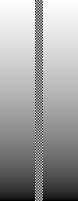
Gamma 1.8 |
Gamma 2.0 |
Gamma 2.2 |
![[IM Output]](monitor_g2.4.png)
Gamma 2.4 |
sRGB Colorspace Correction
Saving an image using a sRGB Colorspace is very similar to Gamma correcting an image, but is slightly more complicated so as to better reproduce the actual response of the human eye, specifically with very dark shades of color.
So lets save our linear gradient in a sRGB corrected colorspace.
|
![[IM Output]](gradient_sRGB.gif)
|
As of IM v6.7.7 the above is simplified to just
|
Before IM version 6.7.5 the above would have failed as IM had the
meanings of 'sRGB' and 'RGB' colorspace reversed. As such on older versions
of IM the two colorspace names needed to be swapped. For example...
|
-set
colorspace ..." to ensure the colorspace is as you are expecting.
And here are all three images together so you can compare them.
|
Linear |
Gamma |
sRGB |
Processing Real Images
Most image processing operators do not care what colorspace an image is using, it just applies its operations to the channel data regardless of its colorspace. Though some have to make special effort for handling the extra channel data for 'Black', and as you will see later 'Alpha' (or 'Alpha' transparency). However the colorspace of an image can greatly influence the final result of many operations. As such doing image processing in a different color space can generate improved results. This example more clearly shows why processing in sRGB is not a good idea. From a discussion on Color Blurs and 'Broken Colors', on the IM Users Forum.
We take two colors using different color channels and blur them together
so that within the channel the color is blurring to zero (a low color value).
First lets do thus using the default sRGB input channel.
|
![[IM Output]](blur_sRGB.png)
|
Here I blur the same image again but using a linear RGB colorspace.
| 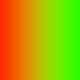 |
Helmut Dersch (of Barrel Distortion and Len Correction fame) recommends that
you should consider using the linear 'LAB' colorspace for
processing images, especially for resizing and image distortions.
I only recommend that you move from the 'input' sRGB colorspace to some
other 'linear' colorspace, when doing drawing, compositions, resizing or
distortions of images. Whether this is linear-RGB, LAB, or LUV, should not
matter that much.
|
|
|
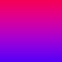
RGB |
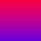
LUV |
![[IM Output]](colorspace_LAB.png)
LAB |
Color Specification
Colors in IM can be specified in many ways. The best guide on this is on the Official IM Website Color Names.Colors by Name
Many colors have been given specific names, which make then easier to use. For example "RoyalBlue" is a very nice bright off blue color.
![[IM Output]](named_colors.png) To the right is an image containing all the named colors, including those with
numbers, that is available in ImageMagick. The colors were first sorted into
3 groups, Off-Whites, Mid-Tones, and Dark Colors, and then plotted in three
separate HSL color-wheels, each with a different vertical offset. Pure white
and black colors appear as there own separate spots at the very top and bottom
of the chart, to form the extremes of the vertical range.
The script that generated it is "
To the right is an image containing all the named colors, including those with
numbers, that is available in ImageMagick. The colors were first sorted into
3 groups, Off-Whites, Mid-Tones, and Dark Colors, and then plotted in three
separate HSL color-wheels, each with a different vertical offset. Pure white
and black colors appear as there own separate spots at the very top and bottom
of the chart, to form the extremes of the vertical range.
The script that generated it is "hsl_named_colors" and follows a technique looked at in Programmed Positioning of Layered Images.
| Technically as I draw the HSL colors in the 3-dimensional form of a 'bi-cone' rather than a 'cylinder', the radius of each color spot has been set equal to the 'Chroma' of the color ('Saturation'/'Brightness'), rather than just its 'Saturation'. See Wikipeadia: HSL and HSV. To be even more correct, Hexagonal Pyramids should also have be used instead of Cones, though that is much harder to calculate, for little gain. |
display" program you can use the middle mouse button to look at
the ImageMagick color name for the specific color that has been plotted.
Special Color Names
There are a few special colors, which are used for special purposes within ImageMagick. 'None' or 'Transparent', is a fully transparent
black color, and generally used to specify background transparency, such as
when creating a Solid Color Canvas, or when
using Image Layers.
'Opaque' is just an alias for 'Black', and as such
is rarely used. It is typically only used when want to mean ANY opaque color,
such as when doing Alpha Channel Processing.
Color Name Conflicts
Color Names can come from three different sources, SVG, X11, and XPM, and most names produce the same color regardless of the defining source. But there are a few colornames which produce different colors, depending on the color specification being used. The biggest problem is the SVG color 'Green' (half bright green)
which is is different to the X11/XPM color 'Green' (pure RGB
green). If you want a pure green, you are better off using the SVG color name
'Lime' which has no conflict.
Wikipedia has an excellent article on the color name conflicts, as well as
a good table of the actual color names, in X11 color names. You
may also like to look at the article Web Colors, which provide
a set of nicely ordered table of some color ranges.
The most notable conflicts are in four specific colors. Here is a table of
the known color name conflicts. Remember the SVG color is what IM will use by
default.
| Conflict Color Name | SVG Result (IM default) | X11 Result for Name | X11 Equivelent Name | Alternative Color Name | ||||
|---|---|---|---|---|---|---|---|---|
| Green | #008000 | #00FF00 | Lime | |||||
| Maroon | #800000 | #B03060 | FireBrick | |||||
| Purple | #FF00FF | #A020F0 | Magenta | |||||
| Gray | #7E7E7E | #BEBEBE | Grey | |||||
- The X11 '
Grey' is a visual mid-gray color. It is also very close (but not exactly the same) as the X11 color 'Gray74' and SVG color 'Silver' ('gray(192)'). - The default (SVG) '
Gray' is very close to a perfect mathematical gray which is better specified using the color names 'Gray50' or 'gray(128)' (for 8-bit use). - As all named colors are specified using 8-bit (0-255) values, none of them will generate a perfect 16-bit pure gray color!
- When a gray is needed for mathematical processing such as FFT DC Phase Edge Detection, Shade Images, Composition Lighting Effects, and Relative Displacement Maps you
are much better off using the color formula '
gray(50%)' which does generate a perfect mathematical mid-tone gray at any color bit depth.
Colors and Colorspace
While many colors have names, most colors found in images do not, they are just a set of values, usually 3, that specify a specific color. However three values on there own does not fully define a color, you also need to specify the 'colorspace' or 'color system' that those values belong. All the above 'named' colors are in sRGB colorspace, which is the colorspace they were defined in. But sometimes you want to define a color in a different colorspace. For example, in HSL, or CYMK, or even as a XYZ color. Imagemagick can do this and you can see the details of these specifications in ImageMagick Color Names. Future: Examples of using other colorspaces (still in development)
While RGB in ImageMagick represents a linear-RGB colorspace, it is an
accepted practice that a colorname of 'rgb(value,value,value)'
is actually defining a sRGB color.
To actually define a linear-RGB color instead of sRGB color use the color
formula, 'icc-color(RGB,value,value,value)' (see next).
|
icc-color(colorspace,color...)' to define a color, or re-define
the colorspace, of a specific color.
Future: Examples of use
Semi-Transparent Colors
You can directly specify semi-transparent colors directly in only two different ways. The most common method of setting a semi-transparent color is to use a hex value. For example, here are some color specifications showing various levels of color transparency. I have displayed the generated color images on a background pattern so that you can see that pattern though the image transparency.magick -size 50x50 xc:'#00FF00FF' color_hex_1.png magick -size 50x50 xc:'#00FF00C0' color_hex_2.png magick -size 50x50 xc:'#00FF0090' color_hex_3.png magick -size 50x50 xc:'#00FF0060' color_hex_4.png magick -size 50x50 xc:'#00FF0030' color_hex_5.png magick -size 50x50 xc:'#00FF0000' color_hex_6.png |
![[IM Output]](color_hex_3.png)
![[IM Output]](color_hex_4.png) 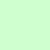
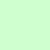
![[IM Output]](color_hex_6.png)
|
Before IM v6.3.0, the last set of hex digits contained the colors
transparency in the form of a 'matte' or 'opacity' value. That is, the final
hexadecimal '00' represented 'opaque' and
'FF' was transparent.
However after IM v6.3.0, this value was inverted so as to represent an
'alpha' transparency value, to bring IM in line with SVG standards and other
graphics packages. In other words 'FF' now represented
fully-opaque and '00' is fully transparent.
|
rgba()' color
function. Where RGB values goes from 0 to 255, and the alpha channel is
specified as a decimal fraction between 0.0 (transparent) to 1.0 (opaque).
magick -size 50x50 xc:'rgba(255,0,0, 1.0)' color_rgba_1.png magick -size 50x50 xc:'rgba(255,0,0, 0.8)' color_rgba_2.png magick -size 50x50 xc:'rgba(255,0,0, 0.6)' color_rgba_3.png magick -size 50x50 xc:'rgba(255,0,0, 0.4)' color_rgba_4.png magick -size 50x50 xc:'rgba(255,0,0, 0.2)' color_rgba_5.png magick -size 50x50 xc:'rgba(255,0,0, 0.0)' color_rgba_6.png |
![[IM Output]](color_rgba_2.png) 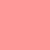
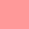
![[IM Output]](color_rgba_5.png)
![[IM Output]](color_rgba_6.png)
|
Before IM version 6.2.7, the 'rgba()' also used a matte value
for the alpha channel value. That is, a value of 0 for fully opaque and
255 for fully-transparent. This was changed as defined by the "W3C CSS3
Color Module recommendation for specifying colors", as part of IM becoming
more compliant with other image standards, particularly for WWW and SVG
use.
|
magick -size 50x50 xc:RoyalBlue color_name_1.png
magick -size 50x50 xc:RoyalBlue -alpha set \
-channel A -evaluate set 80% color_name_2.png
magick -size 50x50 xc:RoyalBlue -alpha set \
-channel A -evaluate set 60% color_name_3.png
magick -size 50x50 xc:RoyalBlue -alpha set \
-channel A -evaluate set 40% color_name_4.png
magick -size 50x50 xc:RoyalBlue -alpha set \
-channel A -evaluate set 20% color_name_5.png
magick -size 50x50 xc:RoyalBlue -alpha set \
-channel A -evaluate set 0 color_name_6.png
|
![[IM Output]](color_name_3.png)
|
|
|
Note that a fully-transparent colors while completely invisible, still has
a color. However most IM operators recognise that any color that is
fully-transparent, is the same as any other fully-transparent color.
Because of this and the way the internal mathematics works, many operators
will often replace a fully-transparent color with fully-transparent black,
(also known as the special color 'none').
|
Color Channels
The actual color data of an image is stored as arrays of values, known as channels. Typically an image will have at least 3 channels, representing red, green, and blue color values. But as you saw above the values stored could represent other colorspaces.Colorspace, and Channel Naming
The primary purpose of "-colorspace" operator is to change the way IM stores the colors of
an image within memory.
Normally each image has 3 (or 4) channels of image data. The current 'color
space' of an image determines what the data of each channel represents. Now
normally the channels are named 'Red', 'Green', 'Blue', as that is normally
the type of image data that is stored in those channels. However that is not
always the case.
Don't think of the 'R' or 'Red' channel as being red, think of it as 'channel
1' which could contain data for 'red', 'hue', 'cyan', or other things depending
on the colorspace of the the image. 'Red' is just a label for the channel
typically used for 'red', or the first channel.
The second most common colorspace used is 'CMYK', which defines
the amount of color 'ink' that should be applied to a darken a 'white' piece
of paper (a subtractive colorspace). Note that K is short for "blacK", which
a negated intensity values of the image.
As this is very common the 'RGB' channels also have an alternative naming of
'Cyan', 'Magenta', and 'Yellow', or just the letters 'C', 'M' and 'Y', though
in reality they refer to the same set of channels that is used for
'RGB' images. A special fourth color channel is also added for
the 'Black' or 'K' color channel.
This basically means that the color channel for "Green" actually
refers to the exact same color channel as would be used for
"Magenta". Whether the data itself is 'green' or 'magenta'
depends NOT on the name of the channel, but the 'colorspace' of the image in
memory.
The same thing happens for other colorspaces. For example using
a 'LAB' color space means the 'Red' channel contains the
'Lightness' value, while 'Green' channel holds the 'A' (or red-green) value,
and 'Blue' channel holds the 'B' (or blue-yellow) value.
In a similar way, the channel names '
Alpha' ('A'),
'Opacity' ('O'), and 'Matte', are all
aliases for the "-channel" setting referring to the images transparency
information. It does not matter that an 'alpha' channel is the inverse of
a 'matte' channel, it still refers to the same channel, and produces the same
result, the Internal Matte Channel of the
image.
Whether an operator treates the internal alpha channel data as a 'alpha' or
value depends of the operator. Low level channel operators like
"-threshold" work
on the raw 'matte' data of the channel in memory. However most higher level
operators like "-fx" and
"-composite" treat
that data as representing 'alpha' data, for operation purposes.
There is one another method of controlling the colorspace of the stored image
data.
The "-set colorspace"
(Added IM v6.4.3-7) will change just the in-memory 'colorspace' setting. That
is it can magick a RGB image into a HSL image but without changing or
modifying the actual pixel data that the image is using. The most typical use
of this is when you are manually Combining
Channel Data to set what is the final colorspace of the combined image.
So lets look at how we can manipulate color channels. Remember each channel is just an array of values. All the channels would then combine together to represent that actual color of each pixel within the image.
Separating Channel Images
The easiest way separating out the individual color channels is to use the "-separate" operator to
extract the current contents of each channel as a gray-scale image.
magick rose: -channel R -separate separate_red.gif magick rose: -channel G -separate separate_green.gif magick rose: -channel B -separate separate_blue.gif |
![[IM Output]](../images/rose.gif)
![[IM Output]](separate_red.gif)
![[IM Output]](separate_green.gif)
![[IM Output]](separate_blue.gif)
In IM v5 and before "-channel" was not only a setting for later image
operations but also on occasion an 'image operator' that converted the
specified channel into a grey scale image. Very confusing!
The IM v6 the " |
-separate" operator will let you separate multiple color
channels according to the "-channel" setting. The number of items in the "-channel" setting will
determine the number of images created (in RGBA order).
For example as the default "-channel" setting is 'RGB' the default action
is to create three images, which I output below.
And here we use the "![[IM Output]](separate_RGB_1.gif)
![[IM Output]](separate_RGB_2.gif)
-colorspace" operator to magick the way IM is storing the
color data of the image into a CMYK color representation.
Then we extract the four color channels involved.
The last image (the '![[IM Output]](separate_CMYK_0.gif)
![[IM Output]](separate_CMYK_2.gif)
![[IM Output]](separate_CMYK_3.gif)
Black' or 'K' channel) is
especially interesting as it appears to be a negated gray-scale image of the
original image. In reality it represents the amount of 'ink' a CMYK printer
should deposit on the paper, reducing the amount of color needed by the other
color channels.
Note that by default the "-channel" setting does not include the special Matte Transparency Channel of the image. If you
want to always generate all channels that is present, you can use
a "-channel ALL" channel setting, or use 'RGBA' or
'CMYKA' "-channel" setting.
Grayscale Channels from Colorspace Representations
You can extract specific channel values from colorspaces for special purposes. For example, here we extract the images grayscale brightness or intensity from the rose image, using a number of different representations.magick rose: -colorspace Gray channel_gray.gif magick rose: -grayscale Rec709Luma channel_luma709.gif magick rose: -grayscale Rec601Luma channel_luma601.gif magick rose: -colorspace HSI -channel B -separate channel_average.gif magick rose: -colorspace HSL -channel B -separate channel_lightness.gif magick rose: -colorspace HSB -channel B -separate channel_brilliance.gif magick rose: -colorspace CMYK -channel K -negate -separate channel_black.gif magick rose: -colorspace LAB -channel R -separate channel_lab_light.gif |
![[IM Output]](channel_gray.gif)
Gray Gray |
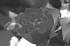
Rec709Luma |
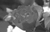
Rec601Luma (Y) YUV/YIQ |
![[IM Output]](channel_average.gif)
Average (I) HSI/OHTA |
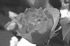
Lightness HSL |
![[IM Output]](channel_brilliance.gif)
Brightness HSB |
![[IM Output]](channel_black.gif)
Neg Black CMYK |
Luminance* LAB / LUV |
-colorspace" option.
Note as of IM v6.7.7 the grayscale images stored without gamma or sRGB
modifications, both in memory and when saved. As such they tend to be darker
than they did before this version.
Note that 'Gray' (also known as 'Intensity' or more exactly 'Luminance') and
the 'Luma' of the YUV colorspace are equivalent. Similarly 'Brightness' of
HSB colorspace, and the Negated 'blacK' channel of CMYK colorspace, are
equivalent (and typically overly bright for grey-scale usage).
Note the 'Lightness*' channel from the LAB (and also LUV) colorspace (not to
be confused with 'Lightness' from HSL) is thought to be best match to the
human visual perception, though it is not commonly used for generating
grayscale images.
Note that if given a grayscale image, all the colorspace grayscale images
produce exactly the same image as the input greyscale image, with the
exception of 'Lightness*' ('R') channel image for a LAB / LUV
colorspace.
Other Channel Separation Methods
One method is to copy one channel to all the other channels, to generate a grayscale gray-scale image, just as what the Separate Operator generates. A simple, but slow, method is to use the FX DIY Operator.magick rose: -fx R channel_red.gif magick rose: -fx G channel_green.gif magick rose: -fx B channel_blue.gif |
![[IM Output]](channel_green.gif)
![[IM Output]](channel_blue.gif)
-fx".
Combining RGB Channel Images
Once you have separated out all the image color channels, and processed them, you will also need to be able to rejoin the images back together again. This can be done using the special list operator "-combine", which is basically
exactly the reverse of "-separate".
magick separate_red.gif separate_green.gif separate_blue.gif \
-combine -set colorspace sRGB rose_combined.gif
|
![[IM Output]](rose_combined.gif)
-combine"
to create an image that is declared as being a sRGB colorspace image.
An user wanted to be able to swap the red and blue
channels of an image, this makes it easy, separate the channels, swap, and
re-combine.
|
![[IM Output]](rose_rb_swap.gif)
|
-channel" setting is 'RGB', and defines what images
channel images are being joined together. If not all the channels being
combined together are defined, the other channels are set using the color
values from the current "-background" setting.
You should however note that both "-combine" and "-separate" will ignore the order in which channels are
defined by the "-channel". Channels will always be processed and generated in the
standard 'Red,Green,Blue,Matte' channel order, for each channel
set in the "-channel"
setting.
As such, even if you use a "-channel BR" setting or just
"blue,red", the "-combine" operator will still expect the two images be red
first then the blue. The green and alpha values (if images have transparency)
will be set from the current "-background" setting values. For Example...
magick separate_red.gif separate_blue.gif -background black \
-channel blue,red -combine rose_red_blue.gif
|
![[IM Output]](rose_red_blue.gif)
Combining non-RGB Channel Images
As of IM v6.4.3-7, you can also "-combine" channel images that represent other colorspaces, but you
need to tell IM what colorspace the resulting image should be.
This is done by using the special "-set colorspace" operator. This basically changes the colorspace of
an image in memory but without mapping the images pixel data, leaving it as is.
Once the image has been combined in the right colorspace you can use a normal
"-colorspace"
operator to map the pixel data back to normal RGB data.
|
|
![[IM Output]](rose_CMYK_combined.gif)
|
|
![[IM Output]](rose_HSB_combined_alt.gif)
|
-set
colorspace" operation, the data for the first channel will already be
in place, as this does not change the actual pixel data, only the way the data
is interpreted.
The last example will not work for 'CMYK' images, as the
'Black' channel image does not actually contain a black
channel! As such "-compose CopyBlack" will fail to find valid
data to copy. I regarded this as a bug, but is currently unlikely to be
fixed.
|
Using other colorspaces can be useful. For example, here I take the built-in rose image and want to negate the luminance channel of the image in '
Lab' colorspace. When finished I re-combine to build a sRGB
image again.
|
![[IM Output]](rose_light_neg.gif)
|
Previously this example used 'HSL' colorspace, but that is
a linear colorspace, and we want to negate in a 'perceptual colorspace'
as provided by 'Lab'.
|
-negate" with your own
set of operations to adjust an images brightness levels.
However as "-negate" is
itself a channel controlled operator we did not have to "-separate" out the
luminance channel in order to negate it.
|
![[IM Output]](rose_light_neg2.gif)
|
Zeroing Color Channels
Sometimes you have an image (RGB or some other colorspace) where you just want to clear or 'zero' one or two of the color channels but leave all the other channels as is. For example, to make a greyscale image without using a RGB Gray-Scaling Techniques, you could 'zero' the Saturation channel ('G') in a HSL colorspace so as to
make a gray scale image. The 'Hue' value has no meaning when saturation is
zero, so you are left with a greyscale image.
The most direct technique, is often to use the Evaluate Operator to zero all the values in
the unwanted channel...
| 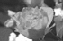 |
# Evaluate (fast and direct)
-channel G -evaluate set 0 +channel
# FX zeroing (direct simple, but slow)
-channel G -fx 0 +channel
# Separate the channels you want to keep,
# then combine using a background color to set the other channels
-channel RB -separate -background black -combine +channel
# Gamma which is a miss-use of the operator, but works VERY well!
# ( 1 = leave alone; 0 = zero channel; -1 = maximize channel )
# This is short, simple , needs no channel setting, but very obtuse!
-gamma 1,0,1
# Threshold channels to zero
-channel G -threshold 101% +channel
# Threshold to maximum value then negate to zero
-channel G -threshold -1 -negate +channel
# Multiply with an appropriate primary/secondary color
# The color specifies the channels to preserve! 'magenta' = 'red'+'blue'
\( +clone +level-colors magenta \) -compose multiply -composite
# Colorize specific channels to black
# (0 = leave alone; 100% set from fill (black) )
-fill black -colorize 0,100%,0
|
Colorspaces
So far we have concentrated on the 'sRGB', 'RGB' and
'CMYK' colorspaces. That is, because these are the colorspaces
that is typically used for display, printing and traditional storage of images
in files.
But while these colorspaces are practical, they are not representive of how we
as humans actually view the world. Our eyes may see in red, green and blue
wavelengths, but our brains interpret these as: color hue (what color),
grayness (how colorful), and intensity (how bright/dark).
Because of this many colorspaces and color systems have been developed, often
from completely indepenant requirements. Painters for example developed
a system of colors (based on color sources like lapus luzuli), shades and
tinting. Later computer systems using RGB, needed better ways for users to
select or modify colors, in ways that was not to computationally intensive.
Hue Based Colorspaces
Probably one of the most well known alternative is the cyclic-hue, based system, which was developed as a color selection interface for RGB colors. Basically the RGB color cube was rotated in 3 dimentions so that the black-gray-white diagonal axis of the cube became on axis of the colorspace. And this specified how dark or light a color was. The key feature of this change was an simple conversion from RGB values that spaced the primary colors equally around this axis, so as to form a Hue that cycles from red, though green, then blue and back to red. How far away the color was from this axis (radially) was known as saturation or chroma.For example lets Separate the channels of the builtin '
rose:' image afetr transforming it into the 'HSB'
(Hue, Saturation, Brilliance, also known as HSV, with V for Value),
colorspace.
Or a similar but not quite the same '![[IM Output]](separate_HSB_0.gif)
![[IM Output]](separate_HSB_2.gif)
HSL' (Hue, Saturation,
Lightness).
magick rose: -colorspace HSL -separate separate_HSL_%d.gif |
![[IM Output]](separate_HSL_0.gif)
![[IM Output]](separate_HSL_1.gif)
![[IM Output]](separate_HSL_2.gif)
HSL' and 'HSB' is how
bright the primary colors are defined. But to see this we are better off
looking at more practical represntations of the colorspace, using
colorwheels.
If you look at the last 'brightness/lightness' images in the above
separations, you will see that 'HSB' treats a strong (near
primary) 'red' color as almost white, while 'HSL' treats it as
more like a mid-tone gray intensity.
Generating a HSL Color Wheel
The above raw separations of the color from an image is still difficult to understand. To better understand the colorspace, we need to try and view it The colorspace is more usually represented as a circular polar gradient, showing some part of the colorspace. You can generate the separate channel value images, and Combine them images to generate specific types of images which are hard to generate in other ways. For example, here we generate perfect 'HSL' color wheel.
magick -size 100x300 gradient: -rotate 90 \
-distort Arc '360 -90.1 50' +repage \
-gravity center -crop 100x100+0+0 +repage angular.png
magick -size 100x100 xc:white solid.png
magick -size 100x100 radial-gradient: -negate radial.png
magick angular.png solid.png radial.png \
-combine -set colorspace HSL \
-colorspace sRGB colorwheel_HSL.png
|
![[IM Output]](angular.png)
Hue |
Saturation |
![[IM Output]](radial.png)
Luminance |
|
![[IM Output]](colorwheel_HSL.png)
HSL Colorwheel |
| The grey scale images are generated as a linear gradient using sRGB values. As such the gradients tend to look a little darker than they should. It is however tha values in the input images that is important here, not the viewing colorspace. On the other hand the resulting image while generated in linear RGB colorspace, is being saved as sRGB colorspace to ensure that browsers and other image display programs, display the gradient in a way that works well visually. |
There are a number of colorpsaces that also use this same 'hex cone' based, hue system. HSB, HCL and HCLp (perceptual HCL) . Here are colorwheels of all four of these 'hex-cone' colorspaces.
magick angular.png solid.png radial.png \
-combine -set colorspace HSL \
-colorspace sRGB colorwheel_HSL.png
magick angular.png solid.png radial.png \
-combine -set colorspace HSB \
-colorspace sRGB colorwheel_HSB.png
magick angular.png solid.png radial.png \
-combine -set colorspace HCL \
-colorspace sRGB colorwheel_HCL.png
magick angular.png solid.png radial.png \
-combine -set colorspace HCLp \
-colorspace sRGB colorwheel_HCLp.png
|
|
HSL |
![[IM Output]](colorwheel_HSB.png)
HSB |
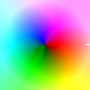
HCL |
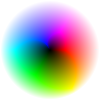
HCLp |
HSB' colorspace will produce primary colors at
maximum lightness (HSL generated these at half intensity). Because of this
white can only be generated when saturation is zero. As a result instead of
a white area around the edges, you get fully-saturated colors, instead.
The 'HCL' colorspace uses the same 'hex-cone' hue calculations
but it adjusts the 'lightness' channel so as to use color intensity, rather
than direct linear-RGB values. As a result when using a the
'HCL' The primary colors are located at different intensity
levels, with blue closer toward the central black color, and red colors much
brighter and further out.
The 50% intensity area of the 'HCL' colorspace does not produce
strong colors but instead generates more natural pastel colors.
For example, here is a comparison of the saturated hues between HSL and HCL
colorspaces at a 50% intensity.
magick -size 100x100 xc:black \
-fill white -draw 'circle 49.5,49.5 40,4' \
-fill black -draw 'circle 49.5,49.5 40,30' \
-alpha copy -channel A -morphology dilate diamond anulus.png
magick hue_angular.png -size 100x100 xc:white xc:gray50 \
-combine -set colorspace HSL -colorspace RGB \
anulus.png -alpha off -compose Multiply -composite \
anulus.png -alpha on -compose DstIn -composite \
-colorspace sRGB hues_HSL.png
magick hue_angular.png -size 100x100 xc:white xc:gray50 \
-combine -set colorspace HCL -colorspace RGB \
anulus.png -alpha off -compose Multiply -composite \
anulus.png -alpha on -compose DstIn -composite \
-colorspace sRGB hues_HCL.png
|
|
HSL/HSB |
![[IM Output]](hues_HCL.png)
HCL |
HCL' does not contain pure colors, they are
just not 'forced' into a common plane as they are in 'HSL'
colorspace. In particular note how all the shades in HCL have the same 50%
intensity (as requested), unlike the results of the HSL colorspace hues.
Green is probably the closest of all the main colors to a 50% intensity, so
has a good response in 50% hues.
It is recommended you use this colorspace for hue rotations, so as to preserve
the general brightness of all the colors in the image. See the examples in Modulate in HCL Colorspace.
HWB Colorspace ???
Perceptual Colorspaces
The colorspaces 'Lab' and 'Luv' are designed, such
that they fully separate the greyscale intensity from the color components of
an image. Unlike 'RGB' and 'sRGB' colorspaces. This
makes the colorspace a lot easier to process and modify in general, once you
get the hang of it.
More specifically 'Luv' was designed to be 'perceptually linear'.
That is, that a small change in color in one part of the colorspace looks to
be about the same, as a similar change in another part of the colorspace.
This make Luv colorspace much better suited for image difference comparisons.
The two colorspaces are very similar, and generally produce similar results
when processing image. Here we separate the channels for the colorspaces
'Lab' and 'Luv', just to show just how similar the
two colorspaces actually are.
magick rose: \( -clone 0 -colorspace LAB -separate +append \) \
\( -clone 0 -colorspace LUV -separate +append \) \
-delete 0 -append -set colorspace sRGB separate_lab_luv.png
|
|
|
|
![[IM Output]](separate_lab_luv.png)
|
Lab Luv |
Lab' and 'Luv'
colorspace can be seen using its cylindrical 'LCHab'
'LCHvu' variation, in The LCH Color
Wheel below.
For practical example of using these colorspace see Resizing in Lab colorspace.
Lab and Luv, based Color Spaces
The 'HCL' colorspace is based on the 'LCHuv'
colorspace, which is a cylindrical representation of the 'Luv'
colorspace, though with a simpler formula for the lightness channel, so as to
generate pure white at maximum lightness.
For completeness here are the cylindrical representations of the
'Lab' and 'Luv' colorspaces, which are known as
'LCHab' and 'LCHuv' respectively.
However note that the order of the channels is the reverse of the
equivalent 'HCL' colorspace shown above.
magick radial.png solid.png angular.png \
-combine -set colorspace LCHab \
-colorspace sRGB colorwheel_LCHab.png
magick radial.png solid.png angular.png \
-combine -set colorspace LCHuv \
-colorspace sRGB colorwheel_LCHuv.png
|
|
Lightness* |
Chroma |
Hue |
|
![[IM Output]](colorwheel_LCHab.png)
LCHab |
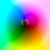
LCHuv |
LCH' colorspace is an alias for 'LCHab'.
In the above you can see that 'LCHuv' has a discontinuity where
unrealistic colors are being set using the colorwheel process. Normal
conversions of images will not generate these colors.
scRGB High-DynamicRange Colorspace
Wikiepedia: http://en.wikipedia.org/wiki/ScRGB This is essentially a method of storing a High dynamic range color (with negatives and up to 10 times linear RGB range) in a 16 bit integer, with only 1/2 the color resolution of a normal 16-bit sRGB image. As it is using 16bit integers it can be stored in image files formats that can save such images (PNG, PPM, MIFF), though a color profile, or some other method should be used to mark those images as holding scRGB colorspace data. You would have to be very careful, with many image processing operators in this colorspace as it has an 'offset' to allow it to handle negative numbers. And while some operators like resize and distort can be used directly on this colorspace, it is probably a better idea to use a HDRI version of ImageMagick, and magick to linear RGB (with negatives), for more general image processing. Examples and more information on using this colorspace would be good
Replacing Colors in Images
ImageMagick naturally provides a number of options to replacing a specific and near match colors with another color. This is great when dealing with icons and 'bitmap' type images that contain very few colors, but tends to fail when dealing with images containing shades of colors or anti-aliasing edge pixels. Basically you need to remember that colors are replaced by a single shade. So if you replace a set or neighbourhood of colors, all those colors are replaced by one specific single color and not by a matching range of colors. That is not to say it is impossible to do a shaded color replacement, just not simple to do at this time, without a lot of work. Even so, GIF images does not allow the use of semi-transparency, so replacing colors in this way is a good method for controlling GIF background transparency (See GIFs on a Background Pattern for examples) The other aspect is that while you can map all 'close colors' to a given colormap, using Pre-Defined Color Maps, there is no operator to do a direct one-to-one mapping of a large set of colors to another completely different set of colors. This is a short coming that may change in a future version of IM. With that caveat, lets look at the ways IM does provide for the direct replacement of one specific colors with another color.Replace a Specific Color
The "-opaque" and
"-transparent"
operators are designed for replacing one color in an image with another.
For example to replace a 'blue' color with say 'white'
you would use a command like this...
|
|
-fill" color.
However as of IM v6.2.7, this operator is limited by the "-channel" setting. As such, to
magick a color (say blue) to transparency, you will need to specify
a "-channel" to include
the alpha channel to make colors transparent. You will also need to ensure
the image has a 'matte' or alpha channel
enabled, to hold the transparency information.
|
|
-transparent".
|
|
|
|
Before IM v6.3.7-10, the inverse operation required the use of some
trickiness using image masks. Basically you replace the color you want to
preserve with transparency, then "-colorize" all the other
colors to the desired color to create an overlay mask. This is then
overlaid on the original image to 'mask out' the colors that did not match!
|
| Be warned that as all matching colors (especially 'fuzzy matched colors', see below) is replaced with a single uniform color, you will not get any anti-aliasing of the edges of the colored areas. And you will lose any an all shadow or other shading effects that may be present. This can have a seriously detrimental effect to the look off any non-simple non-cartoon like images. This type of color replacement is not designed with practical real world images in mind, but more for image masking effects. Caution is advised. |
-opaque" color
replacement cannot replace a color with a tiled pattern. It will only replace
colors with another single specific color. However both the "-draw" and "-floodfill" color replacement
methods can (see below).
Replace using a Color in the Image
You can also use Draw Color Replacement to recolor images based on colors present in the image itself, rather than a specific color.
|
|
|
|
-opaque" and "-transparent" the Draw Color
Replacement, does not let you invert the 'matching colors' to be replaced.
Draw also has a special Matte Replacement, where
only the transparency of the fill color is replaced. That is, you can make
all matching colors transparent, or semi-transparent, without actually
changing the color of the pixel itself. With the appropriate file format of
course.
|
|
-draw" is that you can also replace the color with a tile pattern.
For example..
|
|
Floodfill Draw
The Draw Color methods also provide you with a simple method of replacing a color by 'floodfilling'. That is, rather than replacing ALL the matching colors within the image, you can select just the colors which are 'connected to' or 'attached' to the specified point in the image. The specified point will not only specify the stating (seed point) but also the color that you are trying to replace.
|
|
|
|
Floodfill Operator
The "-floodfill"
operator was added to make floodfilling slightly easier, especially when you
what to exactly specify the color that you specifically want to replace.
This can be especially important when using Fuzz Factor
color matching.
However be warned that if that seed point is not within a Fuzz Factor match of the color you are looking for then "-floodfill" does nothing.
This can be regarded as the operators feature as well as its curse.
A small Fuzz Factor is recommened for flood filling.
Or ensure seed point exactly matches looked for color.
For example, add a border of known color to flood fill from edges...
Or ensure seed point exactly matches looked for color.
|
|
|
|
|
![[IM Output]](floodfill_hit_miss.gif)
|
Green' and 'Blue' flood-fill
operations 'hit a disk' (and filled it), while the 'Red'
flood-fill, did not match a disk, so no disk was filled, without accidentally
filling the background of the image.
It also means that if you already filled a specific area, later fills will not
're-fill' the same area if two points hit that area. that can save a lot of
time.
You may also like to look at Conditional Dilation which represents a lower level floodfill operation
from multiple 'seed' points in the image.
Fuzz Factor - Matching Similar/Multiple Colors
The overall results of just selecting a single color to replace, as shown in the previous examples is usually not very nice. The edges or areas of solid colors generally have a mix of colors at the edge, due to anti-aliasing (See Anti-Aliasing for more information). As such you should avoid direct color replace if possible. For example, here I take what looks like a simple black and white 'cow' and try to make it a red cow. As you can see only the center parts of the 'black' areas actually became red. That is, because, while the image appears to be black and white it is really a gray-scale image with almost all the edges various shades of gray. That is, they are not exactly pure-black in color. The fuzz factor, ("![[IM Output]](../images/cow.gif)
{kind=link}
{kind=link}
{kind=link}
{kind=link}
{kind=link}
{kind=link}
{kind=link}
{kind=link}
{kind=link}
{kind=link}
{kind=link}
{kind=link}
{kind=link}
{kind=link}
{kind=link}
{kind=link}
{kind=link}
{kind=link}
{kind=link}
{kind=link}
{kind=link}
{kind=link}
{kind=link}
{kind=link}
{kind=link}
{kind=link}
{kind=link}
{kind=link}
{kind=link}
{kind=link}
{kind=link}
{kind=link}
{kind=link}
{kind=link}
{kind=link}
{kind=link}
{kind=link}
{kind=link}
{kind=link}
{kind=link}
{kind=link}
{kind=link}
{kind=link}
-fuzz")
represents a 'similarity' match in multi-dimensional spherical distance
between colors, using whatever color space the image is using.
Well okay lets try that in plain English. You have a specific color. Another
color will be treated as being same as the color being looked for, if
the difference between these colors is less than the fuzz factor setting. The
larger the 'fuzz factor' and more 'near' colors will match and be replaced.
So lets try that on our cow image so as to magick not only pure-black but
also near-black colors to red.
As you can see we now replaced all the 'dark' pixels of the image to red. But
the result is still very bad, with a grayish tinge to the edge, and strong Aliasing effects. Direct color replacement is
not a good solution for this image, even though you can make it work using
a large 'fuzz factor' . See the examples in Level adjustments by Color for the
ideal solution for this image.
This problem is even worse for images where you are trying to replace
a background color with transparency. You basically end up with a 'halo'
around the object on that background color. This is very difficult to solve,
and problems like this are looked at in detail in Background Removal.
What operations use fuzz factor
The "{kind=link}
-fuzz" operator
effects just about any operator which compares specific colors within an
image. This includes:
"-opaque",
"-transparent",
"-floodfill",
"-trim",
"-deconstruct",
"-draw 'color'",
"-draw 'matte'",
and probably others. It also effects GIF
"-layers
OptimizeTransparency",
and
"-compose
ChangeMask"
handling.
It also effects the results of "magick compare" and specifically the
"-metric AE" or
Absolute Error Pixel Count.
Fuzz Factor Distance
The "-fuzz" setting is
actually a form of color 'distance' setting. Any color that is within the
given distance of the color being looked for, will match that color, even
though it is not an exact match.
A value of '200' represents a distance of 200 color units in the
current color depth of the IM being used. For an IM Q16 (16 bit quality for color store) this is quite
small, for an IM Q8 this is VERY large, and will cause a lot of colors to
match each other.
Here for example I change all the colors that are within 30,000 color units (for
IM Q16) of 'blue' to white. With my Q16 ImageMagick programs,
that represents approximately the distance from 'blue to
'navy' (half dark blue),
|
![[IM Output]](opaque_blue.jpg)
|
To make this easier to understand here I invert the matched colors
turning the unmatched colors to white.
|
![[IM Output]](opaque_blue_not.png)
|
If your IM is older than version 6.3.7-10 when the 'plus' form of the
"-opaque" operator was
added, you can use this masking method to invert the result of the color
match...
|
![[IM Output]](opaque_blue_inv.png)
|
Or this method that limits all modifications to just the 'alpha channel', so
that all the original colors, are left as is. That is, you create a negated
mask from the color selection, so as to make all non-selected colors
fully-transparent. They remain present, just transparent!
|
![[IM Output]](opaque_blue_inv_alpha.png)
|
An advantage of these alternative methods, is that you can expand them to
generate a 'not multiple colors' technique. All that you need to do is
add more colors to the list being made transparent, before negating the mask,
and posibly removing the negated transparency.
| 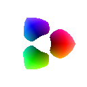 |
{kind=link}
As a matter of interest, in an IM with a Q8 compilation setting, a
"-fuzz" factor of 256
(28) will make the colors 'black' and
'blue' equivelent. For an IM with a Q16 setting this number is
65536 (216).
To make 'blue' and 'red' colors match this
number must be multiplied by the square root of 2, or 362 for IM Q8,
and with 92682 for IM Q16.
To make all colors match (eg colors 'black' and
'white') you will need to multiply by the square root of 3.
In other words, a fuzz factor setting of 444 for IM Q8 and 113512 for IM
Q16.
|
It is likely that better and more realistic color distances can be defined
using a 'perceptual' colorspace, such as 'LAB', or
'LUV'. Just magick images into that colorspace before
performing fuzzy color matching. This will make colors like pure-blue and
black much closer, and yellow and white closer, than they are in
'sRGB' or 'linear-RGB' colorpsaces.
|
-fuzz" factor
as a percentage, makes its use a lot simpler. In this case
'100%' represents a large enough fuzz factor to cover all colors.
That is, it represents the color distance from 'black' to
'white', across the 3 dimensional diagonal of the RGB color cube.
Here we replace any color within 90% of the distance from white to black, with
white. This should result in only the last 10% colors near
'black' to be left on the image, as black is on the opposite side
of the RGB color cube.
| 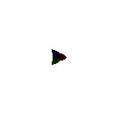 |
{kind=link}
Note that this 90% represents a sphere of colors around 'white' in the RGB
color cube. However this is is not the same as replacing the colors that are
not within a 10% sphere of black.
|
![[IM Output]](opaque_k10.jpg)
|
A "-fuzz" factor of
100%, equates to the RGB color cube distance from 'black' to
'white'. From this we can calculate that a percentage of about
57.7% is the distance between 'black' and 'blue',
and 81.6% is the distance from 'blue' to 'red' or
from either of those colors to 'white'.
In summary, anything larger than about 25%, (just short of the RGB distance
from 'blue' to 'navy blue' represents a very
large color change.
|
magick colorwheel.png -fuzz 10% -fill white -opaque blue opaque_b10.jpg magick colorwheel.png -fuzz 25% -fill white -opaque blue opaque_b25.jpg magick colorwheel.png -fuzz 57% -fill white -opaque blue opaque_b57.jpg magick colorwheel.png -fuzz 81% -fill white -opaque blue opaque_b81.jpg magick colorwheel.png -fuzz 95% -fill white -opaque blue opaque_b95.jpg |
{kind=link}
{kind=link}
{kind=link}
![[IM Output]](opaque_b81.jpg)
![[IM Output]](opaque_b95.jpg)
black', or
'white' that is the most distant color from 'blue',
but that it is actually 'yellow' that is most distant within RGB
color space.
Also note that a 81% color difference will just miss matching a pure
'red' color, however while pure red does not match other reds,
(excluding orange-red colors) do match. That is, again due the to 'spherical'
nature of the color matching. The moral is that you are probably better off
either using multiple small "-fuzz" factored matches or a smaller 'inverted match', than
a single large value.
Here we compare the colors in the image with another color, the 'near-perfect
gray' color, changing similar colors to that same gray color, as the 'fuzz
factor' increases.
magick colorwheel.png -fuzz 25% -fill gray50 -opaque gray50 opaque_g25.jpg magick colorwheel.png -fuzz 30% -fill gray50 -opaque gray50 opaque_g30.jpg magick colorwheel.png -fuzz 35% -fill gray50 -opaque gray50 opaque_g35.jpg magick colorwheel.png -fuzz 45% -fill gray50 -opaque gray50 opaque_g45.jpg magick colorwheel.png -fuzz 51% -fill gray50 -opaque gray50 opaque_g51.jpg |
![[IM Output]](opaque_g25.jpg)
![[IM Output]](opaque_g30.jpg)
![[IM Output]](opaque_g35.jpg) 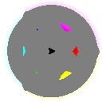
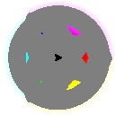
{kind=link}
![[IM Output]](opaque_g51.jpg)
Fuzz Factor and Transparent colors
Using a "-fuzz" factor
becomes more complicated when matching involves transparent and
semi-transparent colors.
For example, here I create a gradient between black and white, across the
image, but then add a transparent gradient vertically. I then do a fuzzy
color match for a perfect gray color (that is 50% gray). In later images
I make the color being match more transparent until it is fully-transparent,
however the Fuzz Factor remains a constant 20%.
magick -size 100x100 gradient: \( +clone -rotate 90 \) +swap \
-compose CopyOpacity -composite trans_gradient.png
magick trans_gradient.png -channel RGBA \
-fuzz 20% -fill Gray50 -opaque 'GrayA(50%,1.0)' fuzz_trans_100.png
magick trans_gradient.png -channel RGBA \
-fuzz 20% -fill Gray50 -opaque 'GrayA(50%,.75)' fuzz_trans_75.png
magick trans_gradient.png -channel RGBA \
-fuzz 20% -fill Gray50 -opaque 'GrayA(50%,.40)' fuzz_trans_40.png
magick trans_gradient.png -channel RGBA \
-fuzz 20% -fill Gray50 -opaque 'GrayA(50%,0.0)' fuzz_trans_00.png
|
![[IM Output]](trans_gradient.png)
![[IM Output]](fuzz_trans_100.png)
![[IM Output]](fuzz_trans_75.png)
![[IM Output]](fuzz_trans_40.png) 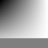
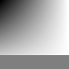
|
{kind=link}
-channel RGBA" in the above is not for color
matching, but for specifying the color channels to be 'filled'. That is
without it, the above will still match the same colors, but gray 'fill' will
remain semi-transparent, and not be set to an opaque gray color.
If you want to match all colors regardless of their transparency, then you
will need to Turn Off Transparent Channel
of the image, at least temporarilly. You can turn it back on again afterward,
though your fill color will again have the same transparency as the original
color.
In the first image matching with a fully-opaque gray color
(alpha='1.0') you get a very spherical match of all the near
opaque gray colors. However as the color being matched gets more
semi-transparent, the number of matching semi-transparent colors that match
will seem to become larger, until a fully-transparent grey will match any
near-transparent color.
What is happening is that as transparency increases, the distance between the
semi-transparent colors decreases. The more transparent two colors are the
closer the colors will be, compared to their opaque counterparts. When both
colors are fully transparent, the two colors will be regarded as a perfect, or
'0' distance, match.
The other thing to notice is that (as of IM v6.6.6-4) the distance from
a fully-transparent color (grey or otherwise) is purely a function of the
colors transparency (alpha value). The last image in the above matched all
pixels that was within 20% of being fully-transparent, regardless of actual
color.
This also means that a large Fuzz Factor with
a fully-transparent color (like 'none'), can be used to match all, or
almost-all semi-transparent colors. For example...
|
![[IM Output]](fuzz_trans.jpg)
|
-alpha off"
removes the last bit of semi-transparency from the image. Because of this the
"-channel RGBA" setting
is not actually needed, but is recommended for completeness.
This example is essentially equivalent to a threshold of the alpha channel,
before adding a gray color underlay (to make transparent colors grey)
| Before IM v6.6.6-4 fuzz color matching did not match fully-transparent with opaque colors equally. In fact Black was much closer match than White. As such the last example will fail. See Fuzz Distance and Transparent Colors Bug for more details. |
| Worse still before IM v6.2.6-2 fuzz color matching did not regard all fully-transparent colors as being the same color. That is, fully-transparent black (also known as 'None') was not the same as fully-transparent white (or color '#FFF0'), even though they are both fully-transparent. |

Color maths (get the average of two or more colors)....
Example Averaging two colors... Say '#000000' and '#DDDDDD'
Generally the colors are added to images, and the result output as a
single pixel 'txt:-' image, which which the color can be extracted.
* use -resize to merge the colors
magick -size 2x1 xc:'#000000' -fill '#DDDDDD' \
-draw 'point 0,0' -resize 1x1 txt:-
* Use -evaluate-sequence mean on them!
magick -size 1x1 xc:'#000000' xc:'#DDDDDD' \
-evaluate-sequence mean txt:-
Or for a lot of colors you can use the 'Box' resize filter
magick rose: -filter Box -resize 1x1\! txt:
# ImageMagick pixel enumeration: 1,1,255,RGB
0,0: (145, 89, 80) #915950
* Use -fx to apply whatever formula you want
magick -size 1x1 xc:'#000000' xc:'#DDDDDD' \
-fx '(u+v)/2' txt:-
With an ImageMagick API the results can be more directly retrieved from the
image.